Аллея Героев Советского Союза
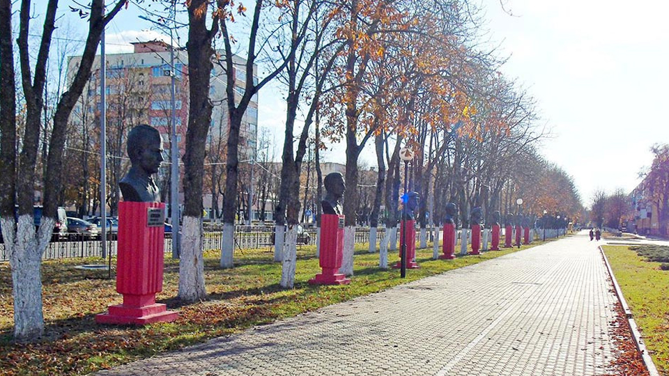Находится по улице 50 лет Октября в центре города и представляет собой череду бронзовых бюстов Героев Советского Союза, погибших при освобождении Светлогорщины.
На ней размещено 9 бюстов воинов, уроженцев различных уголков бывшего Советского Союза – России, Украины, Грузи, Татарстана.
Аллея Героев Советского Союза, погибших при освобождении Светлогорского района, была спроектирована архитектором В. Смоляром в 1993 г. и была открыта 2 июля 1994 года.
Памятный знак «Братство четырёх флотов»
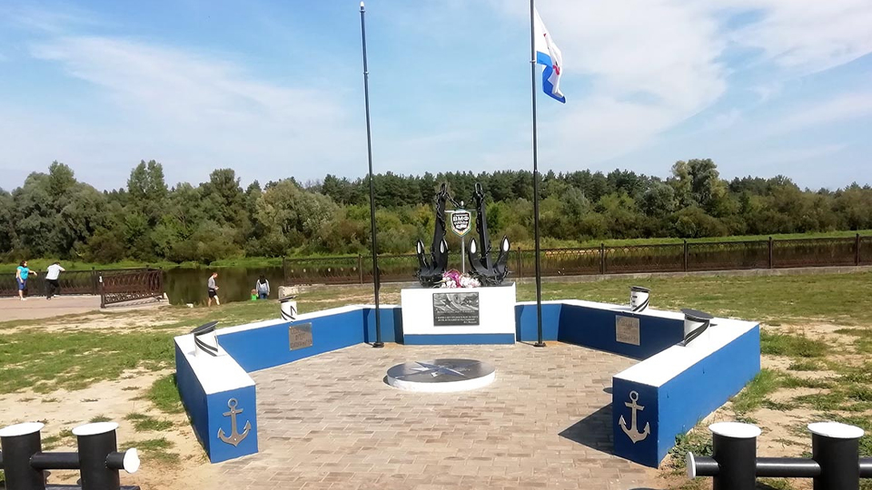Знак открыт в июле 2020 года на набережной Березины по инициативе ветеранской организации бывших военнослужащих ВМФ при поддержке районных властей, предприятий и организаций города.
На постаменте в центре композиции - два настоящих якоря, роза ветров, четыре бескозырки с названиями флотов и два флагштока. По обе стороны от якорей - таблички с указанием флотов, которые были в Советском Союзе: Балтийский, Черноморский, Тихоокеанский, Северный.
При входе на площадку установлены швартовочные кнехты.
Костёл Вознесения Святого Креста
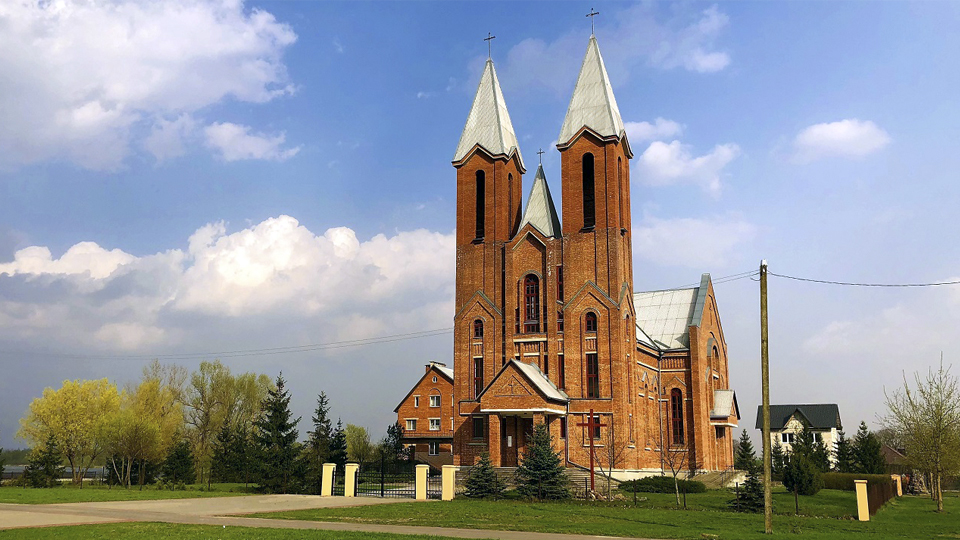ул. Советская, 76а
На территории современного Светлогорска костёл существовал с 1638 года. Нынешний храм - это уже четвёртое сооружение подобного рода.
Крестовоздвиженский костел в Светлогорске расположен на берегу Березины. Первое упоминание католического храма на территории этого населенного пункта, который тогда назывался Шатилки, относится к середине XVII века. С тех пор он не раз перестраивался.
Первый костёл сгорел в 1812, в 1818 ему на смену пришёл костёл Святого Креста, который из-за своей ветхости в 1906 году уступил место новому католическому храму, построенному с помощью помещика Тышкевича. Этот новый храм имел свой орган, звук которого был слышен в имении Иленполь, современная улица Лазо.
Но в 1936 году власти приняли решение о закрытии Шатилковского костёла. Впоследствии он был разорён, а из его брёвен построен колхозный клуб.
Современное здание из красного кирпича появилась в 1997 году и является вариацией на тему неоготики. 6 сентября 1997 года костел освятил кардинал Казимеж Свёнтак.
Автором проекта стал архитектор Сергей Певный. Крестовоздвиженский костел в Светлогорске может рассматриваться как образец неоготики с элементами романского стиля. Главным украшением фасада и наиболее заметным архитектурным элементом являются две высокие башни с шатровыми крышами.
Светлогорский Дом ремёсел
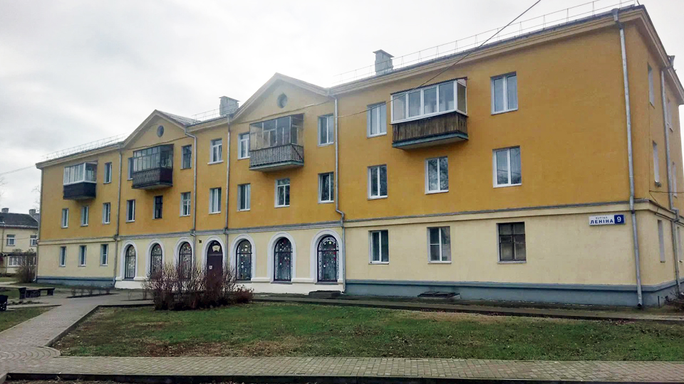Адрес: г. Светлогорск, ул. Ленина, 9
Время работы: с 9.00 до 18.00, обед с 13.00 до 14.00 (выходной - воскресенье, понедельник)
Районный Дом ремёсел работает уже более 16 лет. Деятельность Дома ремёсел направлена на возрождение, сохранение и поддержку традиций народных ремёсел.
Дом ремёсел приглашает посетить: экспозиции в выставочном зале, где всегда можно получить яркие впечатления, восхититься красотой, бесконечной фантазией, оригинальностью экспонируемых работ.
Салон-магазин, где можно приобрести сувенирную продукцию, эксклюзивные изделия и картины художников.
Мастера-методисты приглашают на обучение в студию-мастерскую, где обучаются ученики с 7 до 60 лет. Каждый ученик выбирает себе вид ДПИ по своему желанию и интересу. Обучение проводится индивидуально и в удобное для него время.
Для всех желающих получить навыки по ДПИ дом ремёсел проводит мастер-классы.
Картинная галерея «Традиция»
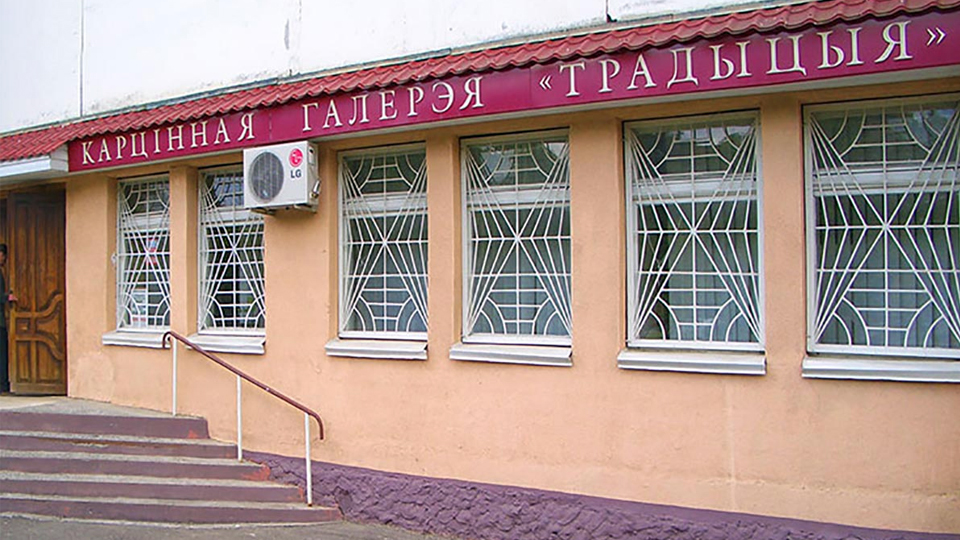Г. Светлогорск, м-н Первомайский, 65
Работает: вторник-суббота с 10.00 до 19.00, воскресенье с 11.00 до 15.00
Выходной: понедельник
Светлогорская картинная галерея «Традиция» открыта 19 сентября 1992 года. 31 июня 1995 года решением Светлогорского горисполкома картинной галерее «Традиция» было присвоено имя Германа Прянишникова, Светлогорского художника и одного из ее основателей.
Светлогорская картинная галерея «Традиция» имени Германа Прянишникова – одна из наиболее активно и творчески работающих галерей Беларуси. Ориентация на лучшие традиции реалистического изобразительного искусства не мешает ей знакомить посетителей с его самыми разными талантливыми проявлениями.
Со дня открытия 19 сентября 1992 года по февраль 2008 года, картинной галереей руководил Изяслав Котляров. Человек, одержимый страстью к творчеству и людям, чье творчество несет счастье, радость и вдохновение всем окружающим.
Особое внимание обращено на творчество лучших художников Гомельщины. Смена экспозиций осуществляется ежемесячно.
Сегодня основной фонд картинной галереи составляет свыше 600 предметов произведений искусства: живопись, графика, скульптура. Это работы наших белорусских и зарубежных художников, подаренные или приобретенные для картинной галереи.
Традиционным стали выставки художников и скульпторов Светлогорщины под названием «Светлогорский вернисаж». Также, традиционными стали выставки женщин-художниц Гомельщины, которые проводятся в честь международного женского дня – 8 марта.
Помимо выставочной деятельности, на базе галереи постоянно проходят разнообразные культурно-массовые мероприятия для различных слоев населения: мастер-классы, интерактивные лекции, квесты, перфомансы, тематические встречи и др.
Скульптура «Ника» на въезде в город
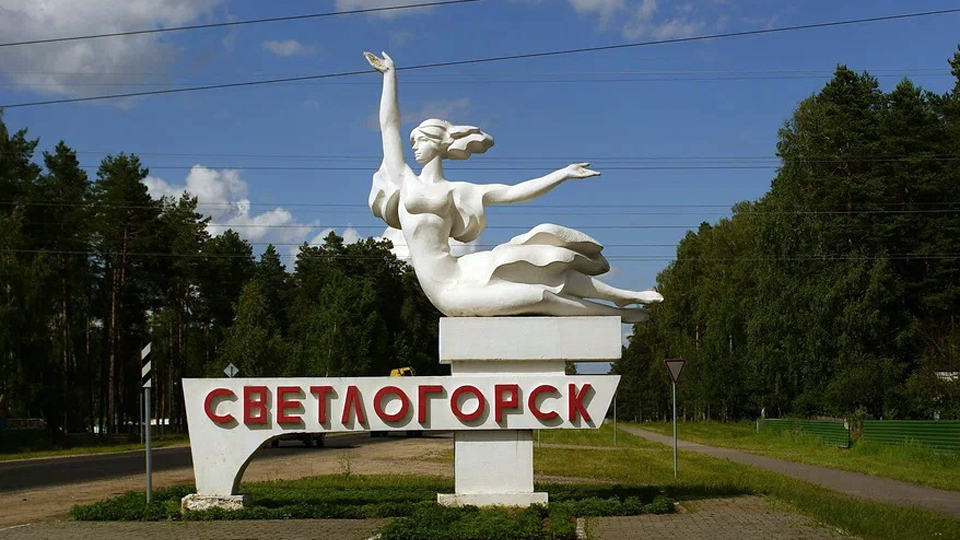На въезде в город установлена изящная скульптура женщины, которую в народе ласково называют «Просиной» в честь Александры Просиной, которая когда-то руководила Светлогорском.
На самом деле скульптура называется «Ника». Сделал ее в 1984 году местный автор Виктор Смоляр.
Памятник "Скорбящий колокол"

Памятник "Скорбящий колокол" - мемориал в честь воинов, павших за освобождение Светлогорского района в годы Великой Отечественной войны.
Он представляет собой 9-тонный бронзовый колокол, имеющий большой раскол, вызванный взрывом. С внутренней стороны колокола, куда можно пройти через этот раскол, выгравированы имена всех 264 погибших при освобождении Шатилок. Они захоронены в братской могиле под пятиметровым сооружением.
С внешней стороны колокола можно найти изображения боевых действий вплоть до взятия Рейхстага.
Памятник открыт 9 мая 1957 года. Сюда перезахоронены 265 воинов, которые погибли в боях при освобождении д. Шатилки и территории района от немецко-фашистских захватчиков.
9 мая 2005 года памятник открыт после реконструкции. Это почти 9-тонный бронзовый колокол. Авторы – известный белорусский скульптор Слободчиков В.И. и архитектор Морозов И.В.
Мемориальный комплекс «Багратион»
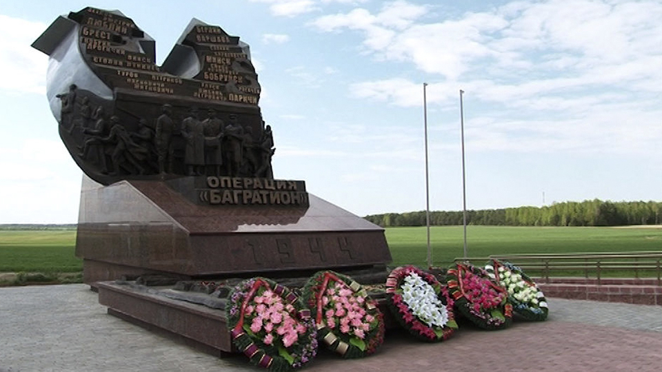На 71-м километре шоссе Бобруйск - Мозырь находится знаковое для светлогорцев место - мемориальный комплекс «Багратион». Тут в июне 1944 года началась наступательная операция советских войск «Багратион».
Здесь возведены памятный знак, часовня, блиндажи и окопы, музей, оборудованы площадки, на которых размещаются образцы военной техники и вооружения. Экспозиция получила статус филиала Светлогорского историко-краеведческого музея.
Высота памятного знака - семь метров. В центре барельефа фигуры четырех великих полководцев: Константина Рокоссовского, Георгия Жукова, Павла Батова и Михаила Панова. Справа и слева фигуры наступающих советских воинов.
Монумент открыт в июне 2014 года. Установлен возле деревни Раковичи Светлогорского района Гомельской области. Именно отсюда советские войска начали масштабное освобождение Белоруссии. «Багратион» вошел в учебники как самая успешная наступательная операция XX века, положив начало освобождению всей Беларуси.
В июне 1944-го советские войска, используя мокроступы, волокуши, плоты и гати, преподнесли неприятелю убийственный сюрприз. Танки, люди, артиллерия неожиданно для немцев прошли через непроходимые болота и застали гитлеровцев врасплох, двумя главными ударами взяв в клещи немецкие армии группы «Центр».
В результате наступления была не только освобождена территория Беларуси, но образовалась 900-километровая брешь между группами немецких армий «Юг» и «Север». Для ее закрытия командование вермахта перебросило с других участков фронта 46 дивизий и 4 бригады. Это облегчило наступление как союзникам на западе, так и советским войскам в Украине и Прибалтике. Из белорусских болот начинался путь на Берлин.
Операция «Багратион» проходила с 23 июня по 29 августа 1944 года, завершившись уже на территории Польши. Это одна из крупнейших военных операций за всю историю человечества. В этой битве с обеих сторон участвовали 4 миллиона человек, около 62 тысяч орудий и минометов, более 7500 танков, свыше 7100 самолетов.
Грандиозное сражение развернулось на фронте в 1100 километров. Потери противника превысили 539 тысяч человек: 381 тысяча убитыми и 158 тысяч пленными. За время проведения «Багратиона» погибли 180 тысяч советских солдат, 600 тысяч было ранено.
Храм Преображения Господня
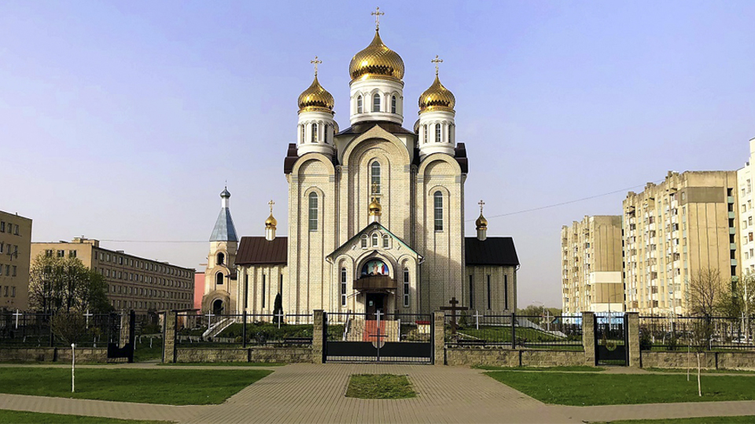Белорусская Православная Церковь, Гомельская и Жлобинская епархия, Светлогорское благочиние
Адрес: Светлогорск, ул. Ленина, 71
Религиозная община прихода храма Преображения Господня в г. Светлогорск зарегистрирована Гомельским облисполкомом в 1995 году, богослужения совершались в молитвенном доме.
В 1998 году начато строительство собора и 17 сентября 2006 года Митрополит Минский и Слуцкий Филарет, Патриарший Экзарх всея Беларуси, совершил освящение собора Преображения Господня.
На территории прихода храма Преображения Господня построена водосвятная часовня в честь иконы Божией Матери «Живоносный Источник».
Пятикупольный собор. Формы собора выдержаны в византийском стиле кресто-арочной системы (в плане сверху в виде креста). Центральный купол символизирует Христа, а четыре малых - евангелистов Иоанна, Марка, Матвея и Луку. Над приделами 3 дополнительных купола.
Храм по высоте от основания до креста – 33 м. (по годам земной жизни ХристаСпасителя); в длину и ширину – 30 м. (по годам совершеннолетия и выхода на проповедь Христа-Спасителя). Открыт в День города 17 сентября 2006 г.
Построен по проекту архитектора Макаревича Леонида Васильевича. По подобному проекту построены соборы в г. Барановичи, Пинск, Белозерск.
Храм открыт ежедневно с 07:30 до 19:30
Мемориальный комплекс «Ола»
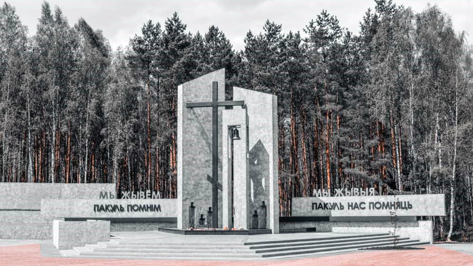Светлогорский р-н, д. Ола
Мемориал расположен на месте одноименной деревни, сожженной нацистами в годы Великой Отечественной войны. Название деревни происходит от названия реки Ола (приток реки Березины), около которой и было основано поселение.
Упоминается в документах 1795 г. как населённый пункт Бобруйского уезда Минской губернии. Деревня имела 6 дворов и являлась государственной собственностью.
Перед началом Великой Отечественной войны деревня Ола насчитывала 34 двора и 168 жителей. Была оккупирована немецко-фашистскими захватчиками в конце июля 1941 г. К январю 1944 г. в д. Олу были согнаны и переселены жители деревень Чирковичи, Здудичи, Ракшин, Рудня, Искра, Какаль (Светач), Дедное нынешнего Светлогорского района; Коротковичи, Плесовичи, Сельное, Мормаль нынешнего Жлобинского района. Беженцы строили землянки, селились в хозпостройках.
Утром 14 января 1944 года немецкий карательный отряд вместе с войсковой частью, которая насчитывала около 1 тыс. солдат, окружил деревню. Людей загоняли в дома, которые затем поджигали. Тех, кто пытался убежать, расстреливали из пулеметов и автоматов, бросали в огонь живыми. Таким образом было расстреляно и сожжено 1758 мирных жителей, в том числе 950 детей. После войны деревня Ола не возродилась.
В 1958 году на братской могиле, в которой захоронены мирные жители и советские воины (всего 2253 человека), был установлен памятник - скульптура коленопреклоненного солдата с венком.
В результате реконструкции братского захоронения создан мемориальный комплекс «Ола», который включает три функциональные зоны: входную группу, мемориальную зону (на территории, примыкающей к существующему братскому захоронению) и соединяющий их пешеходный маршрут по бывшей деревенской улице. В центре мемориальной зоны - символичный крест и колокол. Рядом - звонница в виде стилизованного деревенского сарая с количеством колоколов по числу деревень, жители которых здесь погибли.
Памятник воинам-интернационалистам
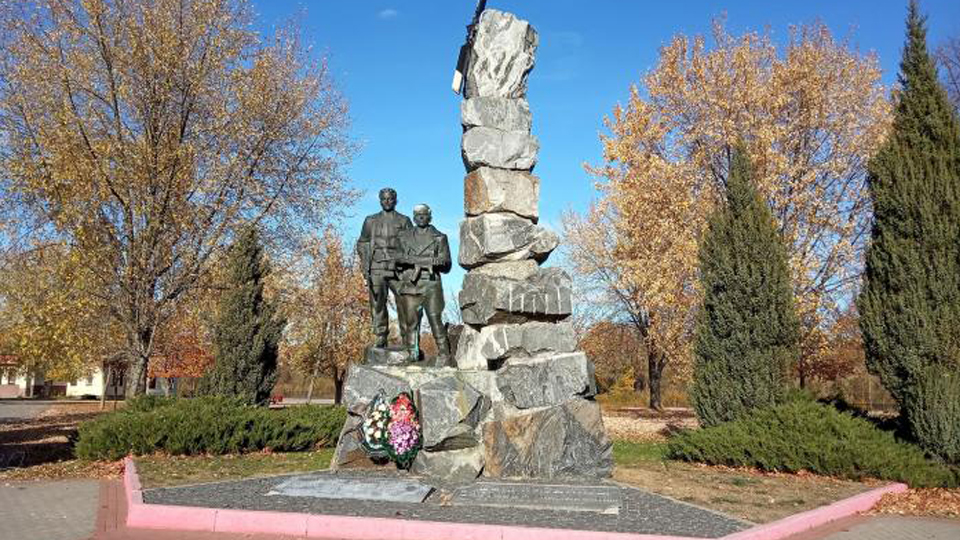Памятник воинам-интернационалистам был открыт 2 июля 1994 года. Светлогорцы называют его «памятник воинам-афганцам».
Рядом расположен другой военный монумент – Скорбящий колокол, посвященный уроженцам Светлогорска, погибшим во Время второй мировой войны.
Конфликт в Афганистане также стоил жизни десяткам жителей города, еще больше были ранены. В память о них решено было воздвигнуть памятник воинам-интернационалистам в Светлогорске. Он включает в себя фигуры двух солдат, олицетворяющие боевое братство, а также композицию из камней как символ афганских гор, где проходили основные боевые действия.
Спроектирован памятник минскими архитекторами А. Кострюковым и В. Ждановым. Это место, куда возлагают цветы новобрачные, куда приходят поклониться памяти воинам погибшим в локальных воинах.
Рядом с памятником стоит боевая машина десанта БМД-1. По инициативе светлогорских воинов-афганцев исполком и военкомат ходатайствовали перед Министерством обороны о выделении из базы хранения одной такой единицы. Силами работников коммунального хозяйства «бээмдэшка» была приведена в надлежащий вид и заняла своё место на Набережной.
Памятник «Роман Шатила»
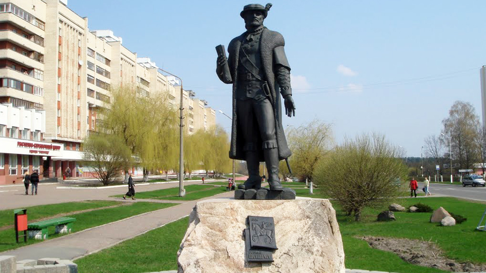Дань основателю местечка Шатилки (Шатилковичи), установлен в центре города, имеет высоту более двух метров. В руке помещика находится привилей 1560 года, выданный королем Речи Посполитой Жигимонтом II Августом. На висящем на груди медальоне изображён современный герб Светлогорска.
Благодаря археологическим находкам можно с уверенностью сказать, что уже в эпоху неолита территория будущего Светлогорского района была заселена. В VI-VIII веках здесь начали распространяться древляне, которые пришли на смену балтскому населению. Собственное государство они не создали. Именно поэтому Светлогорщина в разные времена находилась под влиянием киевских, черниговских и туровских князей, пока в XIII веке не вошла в состав ВКЛ.
В дальнейшем эти земли стали предметом споров между ним и Московским государством. Светлогорщина не раз переходила из рук в руки, но все же оставалась частью Речи Посполитой до 1793 года, когда произошел ее второй раздел и территория будущего Светлогорского района досталась Российской империи.
Дальнейшая история этих мест не изобилует яркими событиями. Их экономическим и культурным центром долгое время оставались Паричи. Первое письменное упоминание этого населенного пункта относится к 1639 году. Тогда он был небольшой деревней, в которой насчитывалось лишь 15 домов.
Как ни странно, дальнейшему процветанию Паричей способствовал пожар, который полностью уничтожил их в 1797 году. Отстроенный Паричский двор император Павел I подарил адмиралу Петру Пущину. Именно благодаря представителям этого дворянского рода Паричи превратились в процветающее местечко.
Долгое время экономика этот края базировалась на сельском хозяйстве и переработке его продукции, а также заготовке древесины. XIX век выдался относительно мирным для этих мест, Первая мировая война также почти не затронула их.
В 1918 году эта волость некоторое время была частью БНР, однако вскоре она вошла в состав БССР. Что касается Паричского района (именно так он назывался изначально), то данная административная единица была образована в июле 1924 года. В разное время она была частью Бобруйского округа, Полесской и Гомельской областей.
Вплоть до середины 20-го века данное поселение было небольшим местечком и называлось Шатилки. Бурное развитие города началось в 1950-х годах и продолжалось вплоть до 1970-х годов. В те времена в городе и окрестностях было возведено несколько крупных промышленных предприятий, новые микрорайоны, учреждения образования, дома культуры и музеи, административные здания. В 1961 году поселок Шатилки был преобразован в город Светлогорск. В 1966 году к городу была присоединена железнодорожная станция Шатилки, а в 1975 году к городу также была присоединена соседняя деревня Светоч, которая до 1964 года называлась Какаль.
Урочище «Николин Остров»
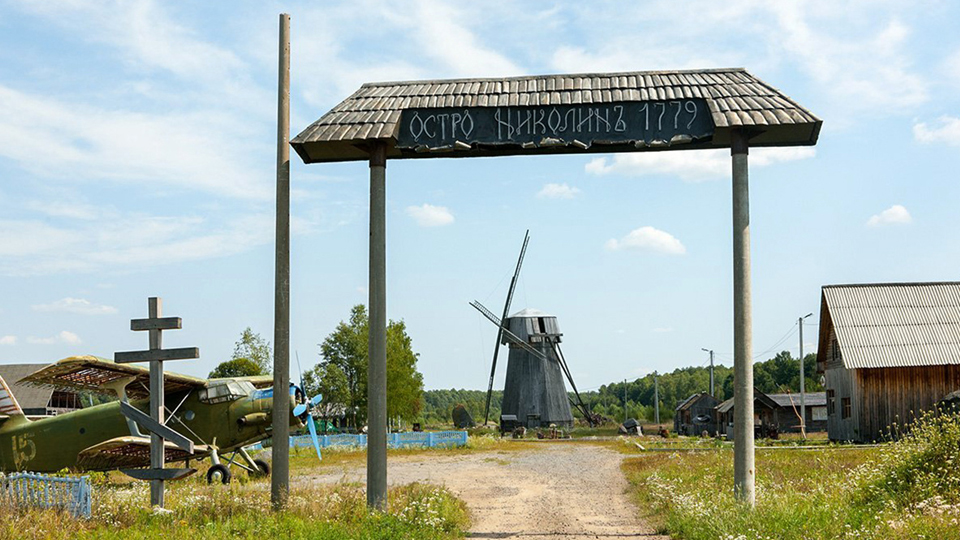Адрес: возле д. Мольча
В урочище "Николин Остров", недалеко от поселка Мольча, находится единственная в Беларуси действующая ветряная мельница, которая была построена в 1883 году и является памятником деревянного зодчества ХIХ века.
Деревянная ветряная мельница относится к типу ветряных мельниц шатрового (голландского) типа с двумя жерновами. В 1924 году ее купил в Речице крестьянин Савелий Фоминок и перевез в Жлобинский район. В 1930-м мельницу и жилой дом забрал местный колхоз. Фоминок был раскулачен и отправлен в Соловецкие лагеря, а после возвращения в 1938 году расстрелян. Колхозники мельницу разобрали и перевезли в деревню Ляды. Местный колхоз, переведя ее на электротягу, использовал мельницу по назначению до 1999 года.
В 1996-м ветряная мельница решением Жлобинского райисполкома была передана дочери С. Фоминка Анастасии Савельевне как наследнице.
Когда фермер из Светлогорского района Владимир Быховцев увидел в Лядах старую мельницу, он решил перевезти ее к себе в агроусадьбу и «реанимировать». Узнав о трагической судьбе семьи мельника, Быховцев пообещал владелице не только восстановить мельницу, но и в память об ее отце установить камень с мемориальной доской.
Сегодня старая мельница является визитной карточкой агроусадьбы «Хутор Николин Остров». На жерновах мельницы можно увидеть клейма Павлиновского завода искусственных жерновов. Также можно рассмотреть и даты 1848 и 1878-й годы. Это говорит о том, что мельница является старейшей в республике. В наши дни она все еще является действующей и может смолоть не одну тонну зерна.
На территории агроусадьбы так же есть свой музей военной техники. Здесь можно увидеть настоящие самолет и боевую машину пехоты. Рядом с мельницей растет дуб, которому более четырехсот лет. Гигантский природный памятник, высотой в тридцать метров, обхватить может лишь несколько человек, ведь его диаметр почти четыре метра.
Неподалеку проходит бобровая тропка, а рядом - нехоженые болота, брусничные заросли, родники и не тронутая цивилизацией природа. Тут можно почувствовать себя настоящим полешуком.
Монумент тепловозу ТГК-2
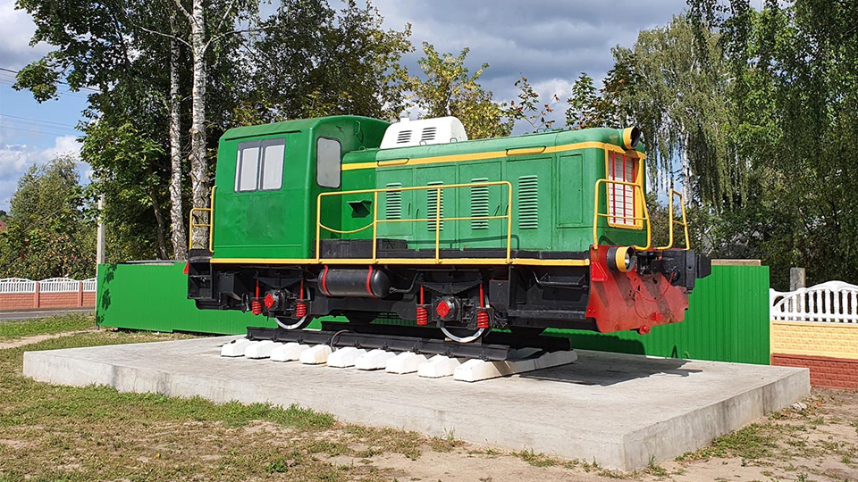ул. Авиационная, 20А
Возле железнодорожного вокзала установлен памятный монумент маневровому тепловозу ТГК-2 производства Калужского машиностроительного завода.
Тепловоз для установки в качестве монумента предоставил ОАО «Светлогорский завод ЖБИиК». Данный тепловоз отработал на предприятии около 40 лет, где перевозил песок, щебень, цемент, вывозил за территорию до 10 вагонов готовой продукции в день.
В восстановлении внешнего вида тепловоза помогли работники Светлогорского машиностроительного завода.